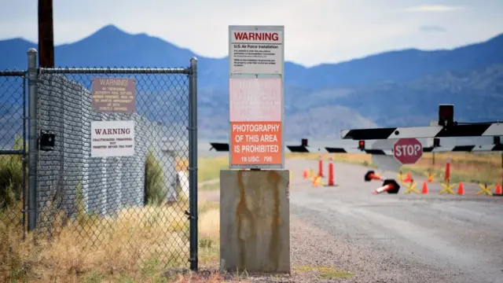
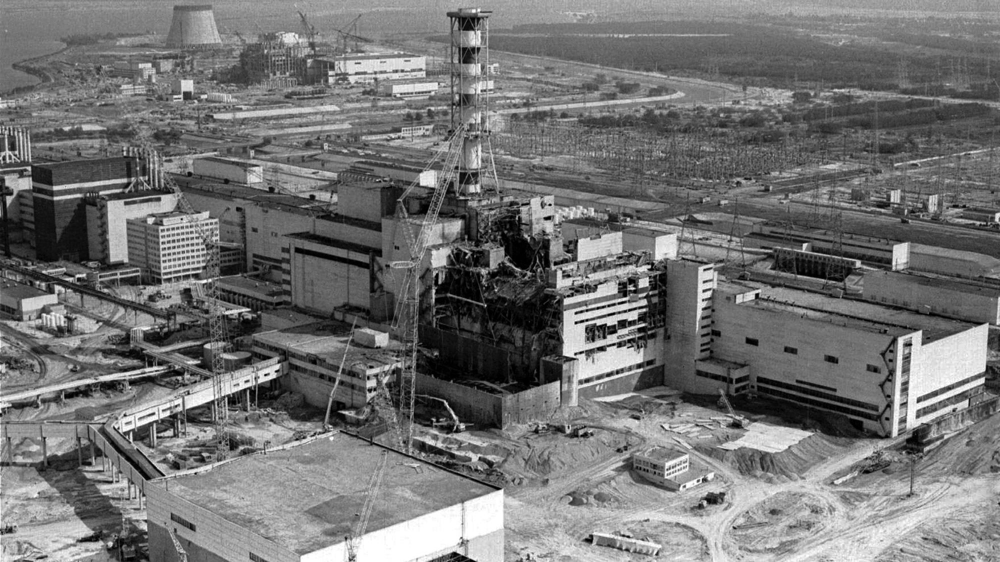
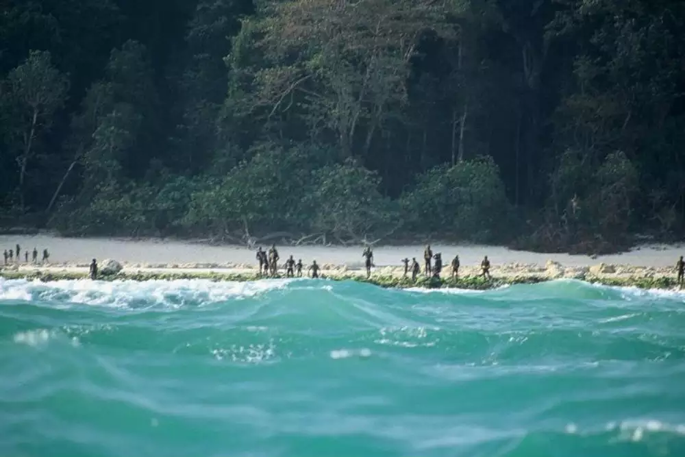
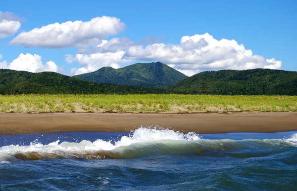

Az egyik legismertebb titkos zóna a híres Area 51, az Egyesült Államok Nevada államában található katonai létesítmény. Az 1950-es évek közepén alakult meg, és azóta számos összeesküvés-elmélet és titokzatos esemény kapcsolódik hozzá. Az amerikai kormány hivatalosan is titokban tartja, mi történik az itt végzett kutatások során, de a területet leginkább az UFO-kkal és földön kívüli élettel kapcsolatos elméletek miatt ismerik világszerte.
A bázist a nyilvánosság előtt teljes mértékben elzárják, és a terület légterét is szigorúan őrzik, ezért a civil látogatók számára teljesen elérhetetlen. Az Area 51 környékét ismerhetjük meg a híres „extrém túrák” során, melyek során a turisták próbálnak a bázis közelébe jutni, de a biztonsági őrök és a katonák gyorsan eltávolítják őket, ha túl közel merészkednek a területhez.
A csernobili atomerőmű, Ukrajnában, a történelem egyik legnagyobb nukleáris katasztrófájának helyszíne. 1986-ban történt itt egy súlyos baleset, amely óriási radioaktív szennyeződést okozott, és hatalmas területet tett lakhatatlanná. A baleset után a környéket - Csernobil városát és a Pripjaty városrészt - teljesen evakuálták, és több évtizedre elzárták a külvilág elől.
Ma, több mint három évtizeddel a katasztrófa után, Csernobil és környéke egy olyan különleges területté vált, amelyet csak bizonyos engedéllyel látogathatnak az érdeklődők. Az „Exclusion Zone” (Kizárt Zóna) néven ismert terület szigorú szabályokkal van körülvéve, és minden látogatónak hivatalos túravezetővel kell bejárnia a zónát.
A világ egyik legzártabb helye a North Sentinel Island, amely az Andamán-szigeteken található, India partjaitól délre. Az itt élő Sentinalese népcsoport évszázadok óta elzárkózik minden külvilágtól, és rendkívül ellenségesek azokkal, akik megpróbálnak kapcsolatba lépni velük. A Sentinalese emberek soha nem voltak érintkezésben a modern világgal, és úgy tűnik, hogy mindenféle technológiai fejlesztés nélkül, a saját hagyományaik és életmódjuk szerint élnek.
Az indiai kormány szigorúan védi a szigetet és az ott élő embereket, és a törzs védelmére törvények vonatkoznak, amelyek megtiltják a sziget látogatását. Azok, akik megpróbálják elérni a szigetet, gyakran szembesülnek a törzsi tagok agresszív reakcióival, akik kőbaltákkal és íjakkal próbálják elűzni az inváziót.
A világ egyik legzártabb helye a North Sentinel Island, amely az Andamán-szigeteken található, India partjaitól délre. Az itt élő Sentinalese népcsoport évszázadok óta elzárkózik minden külvilágtól, és rendkívül ellenségesek azokkal, akik megpróbálnak kapcsolatba lépni velük. A Sentinalese emberek soha nem voltak érintkezésben a modern világgal, és úgy tűnik, hogy mindenféle technológiai fejlesztés nélkül, a saját hagyományaik és életmódjuk szerint élnek.
Az indiai kormány szigorúan védi a szigetet és az ott élő embereket, és a törzs védelmére törvények vonatkoznak, amelyek megtiltják a sziget látogatását. Azok, akik megpróbálják elérni a szigetet, gyakran szembesülnek a törzsi tagok agresszív reakcióival, akik kőbaltákkal és íjakkal próbálják elűzni az inváziót.
Az oroszországi Sakhalin szigetén található egy olyan zárt terület, amelyet egykor a szovjetek nukleáris fegyverek tesztelésére használtak. Ma már a területet az orosz kormány szigorúan őrzi, és nem engedélyezett a civil látogatás. A sziget egyes részei, ahol korábban atomrobbantásokat végeztek, ma is veszélyesek lehetnek, és csak a legszigorúbb engedéllyel látogathatók.
